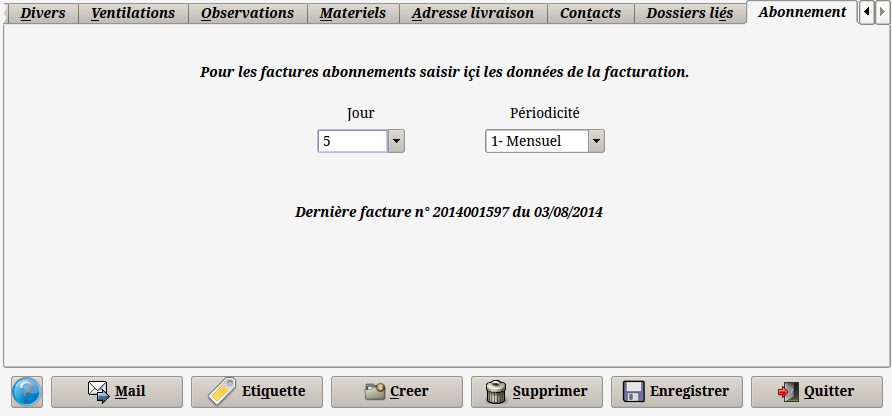
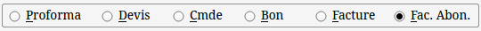
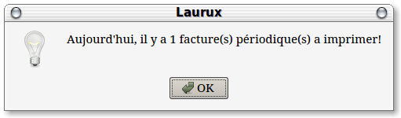
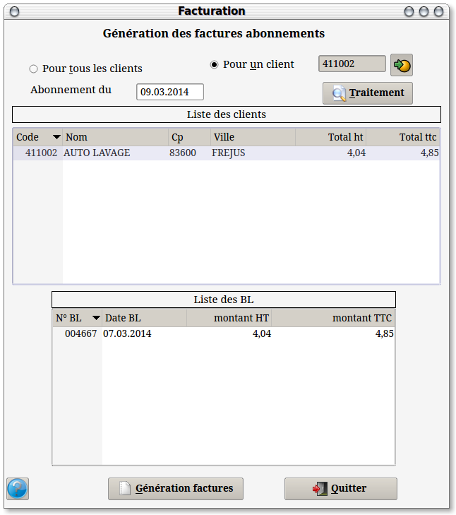
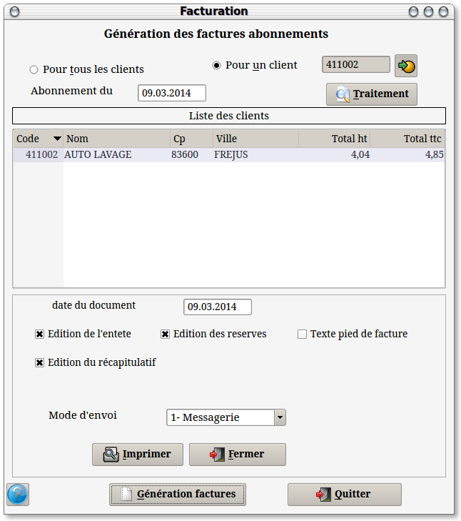

Principe
d'utilisation.
La
facturation des abonnements permet l'émission et l'envoi de factures à des dates
régulières définies préalablement dans les fiches des clients. Il s'agit d'une facturation périodique.
1- Conditions client

Dans l'onglet "Abonnement"
on va d'abord saisir le jour et la périodicité de la facturation.
Si le client a une facturation
fin de mois alors on saisira 30 dans la zone "Jour".
Les périodicités sont mensuelle,
bimensuelle, trimestrielle, semestrielle et anuelle.
Si le client a déjà
été facturé alors on aura une mention concernant la date de la dernière facture ainsi que son
numéro.
2- Saisie des factures.
En premier on va saisir une facture de type "A" en activant le bouton "Fac. Abon."

La saisie de ces factures d'abonnement ne
diffère pas de celles des autres types. La seule différence c'est qu'on
ne peut pas imprimer une facture de type "A"
à partir du programme de saisie des documents mais uniquement par celui
de la facturation des abonnements. Ce type de facture permet aussi la
modification ou la suppression même si l'impression a été effectuée.
NB : Au lancement de Laurux un message d'alerte s'affichera si une facture d'abonnement doit être imprimée.

3- Génération et impression des factures.

Le programme de la facturation des abonnements permet de
traiter l'ensemble des clients ou un seul. On sélectionne le bouton
hadhoc et on clique sur le bouton "Traitement".
Le tri se fait sur la date du jour ainsi que sur la périodicité. Si une
facture n'a jamais été imprimée alors elle apparaitra d'office dans la
liste des factures a imprimer si la date du jour est supérieure au jour
défini dans la fiche du client.
L'interface est similaire à celle de la facturation fin de
mois. Dans la partie haute on aura les clients facturés ainsi que le
montant de la facture.
Si on sélectionne un client alors le détail de la facture
apparaitra dans la partie basse. Pour supprimer un client on le
sélectionne et on fait "Suppr"
Un clic sur le bouton "Génération factures" ouvrira une nouvelle fenêtre.

Cette fenêtre permettra de configurer les factures
(entête, récapitulatif etc...) et surtout le mode d'envoi des factures.
Le programme peut effectuer l'envoi de trois façons. Soit
en utilisant la messagerie du système et dans ce cas le programme
ouvrira une fenêtre par
facture, soit en utilisant le serveur de messagerie Exim4, soit en
effectuant un dépot des factures sur un serveur FTP avec l'envoi d'un
message simultané au client.
Utiliser la messagerie permettra d'intervenir sur le texte
du corp du message alors que l'envoi en masse effectué par Exim ne
permet pas de contrôle.
Pour utiliser Exim il est indispensable que ce logiciel
soit correctement installé et configuré.
On devra également installer
Mutt car Laurux utilise Mutt pour l'envoi des factures et des courriels.
Si on utilise un serveur FTP, dans ce cas Laurux va créer
un répertoire unique pour chacun des utilisateurs recevant une facture.
Il faudra auparavant passer par les préférences afin de définir
l'adresse du serveur, l' identifiant et le mot de passe. Chaque
utilisateur recevra un courriel l'avertissant de la mise à disposition
de sa facture avec en lien, l'adresse du téléchargement.
En fin de traitement on aura une liste récapitulative de
tous les
clients traités par le programme. Cette liste comporte les données suivantes : le répertoire ftp du client, le code, le nom
et l'adresse du courriel du client, le numéro de facture et son montant
TTC.
NB: Le mode d'envoi est sauvegardé automatiquement et sera proposé ensuite par défaut.
NB: Dans la table des clients le programme affiche le répertoire FTP utilisé par le programme de la facturation périodique.
4- Procédure de configuration du logiciel Exim.
Pour configurer Exim en mode
smarthost vous pouvez suivre ce tuto en provenance de Demsg.fr
Sinon vous pouvez suivre les lignes ci-dessous :
Dans une console tapez
dpkg-reconfigure exim4-config puis renseignez les zones :
type d'installation : Envoi via
relais (smarthost), pas de courrier local
Nom de courrier du système :
laurux.fr (a changer par vos données personnelles)
Liste d'adresses IP où Exim sera
en attente de connexions SMTP entrantes : 127.0.0.1 (a changer par vos données personnelles)
Autres destinations dont le
courriel doit être accepté :
Nom de domaine visible pour les
utilisateurs locaux : laurux.fr (a changer par vos données personnelles)
Nom réseau ou adresse IP du
système « smarthost » : smtp.orange.fr::587 (a changer par vos données
personnelles)
Faut-il minimiser les requêtes DNS : non
Faut-il séparer la configuration
dans plusieurs fichiers : non
----------------------------------------------------------------------------------------------------------------------
retour
en haut de la page
Retour
a l'index